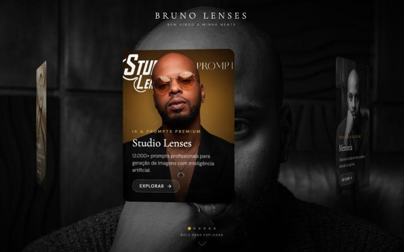

CH.01 Marca própria · hub
Bruno Lenses
Hub de marca
O hub que reúne meu trabalho: carrossel 3D de projetos sobre retrato cinematográfico, e a casa do método DXM de posicionamento.
- HTML
- Carrossel 3D
- Marca
CH.01Live

brunolenses.com1440 × 900